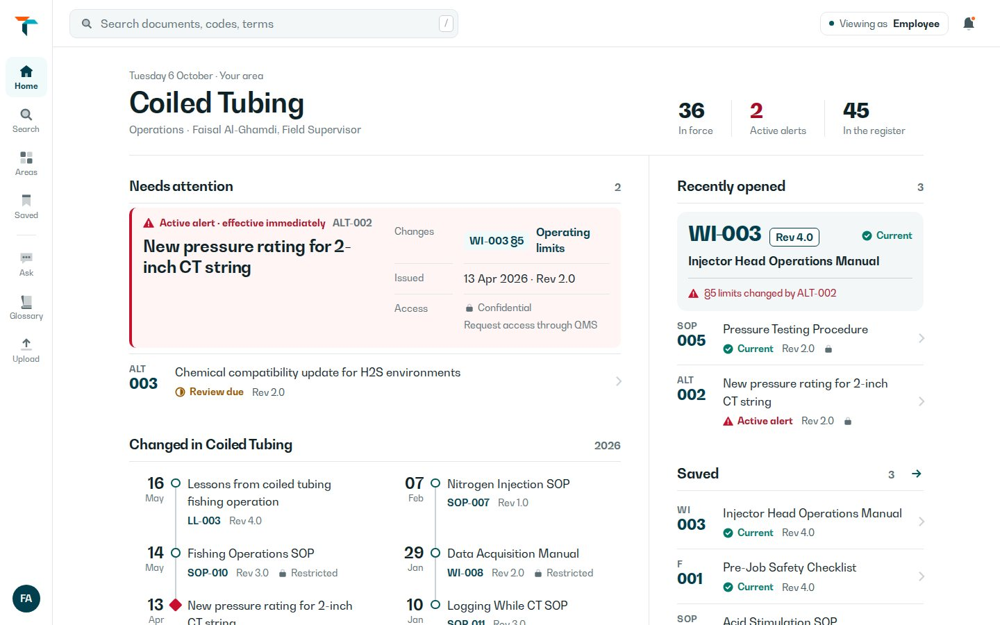
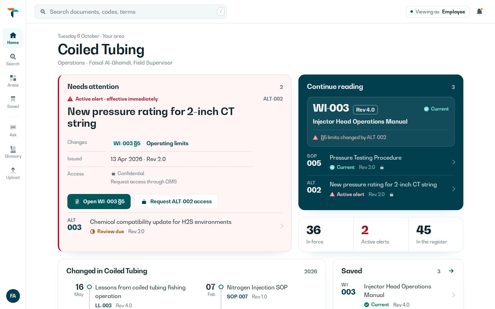
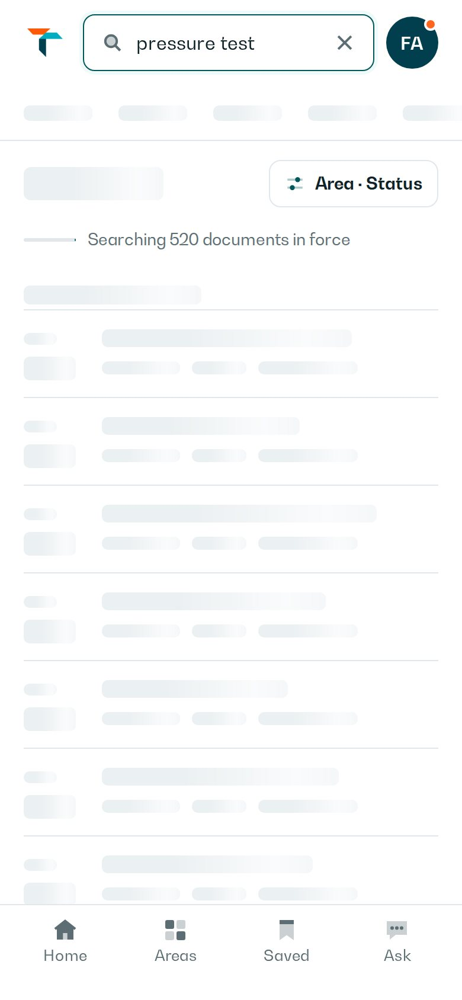
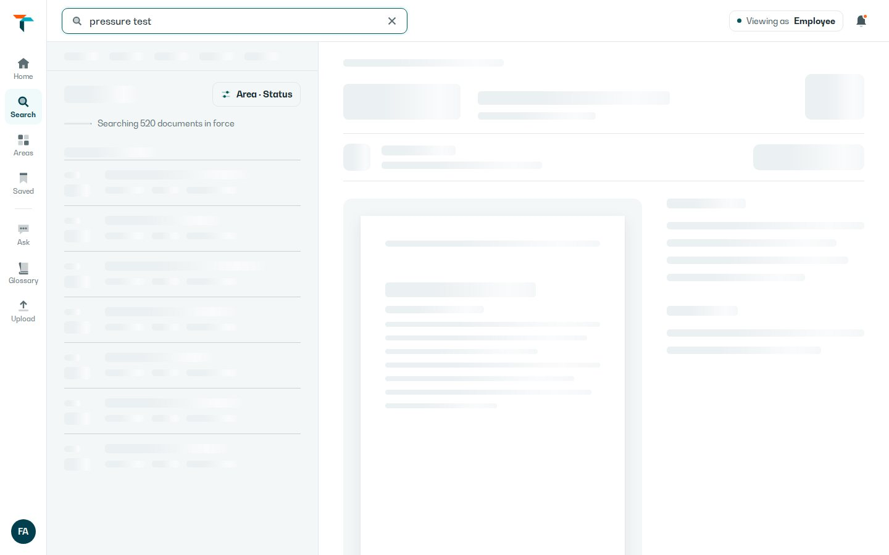
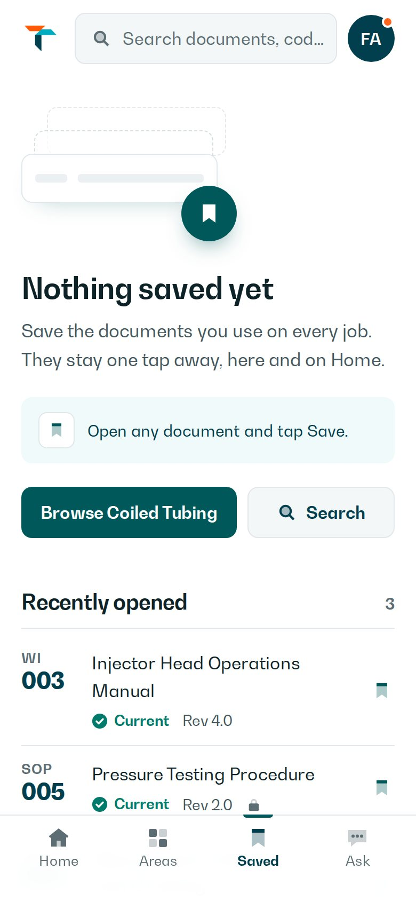
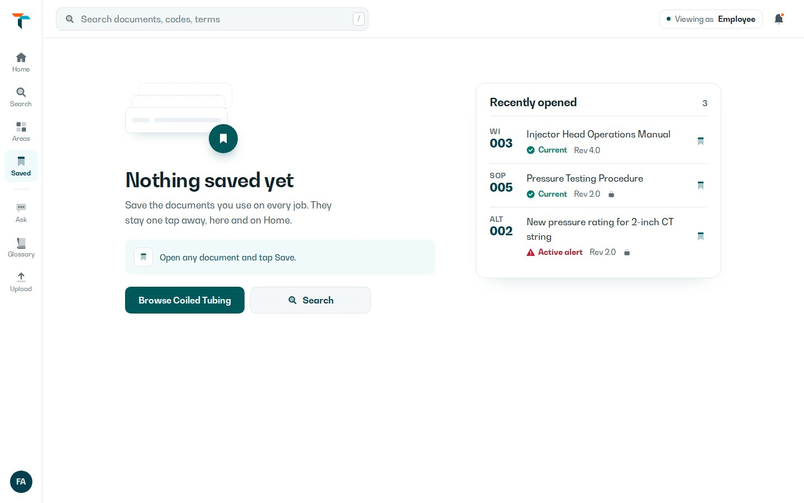
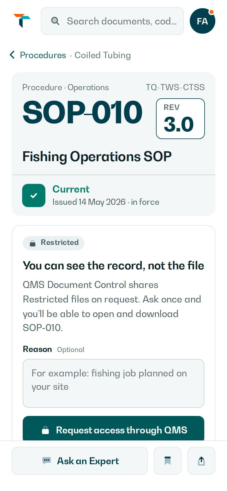
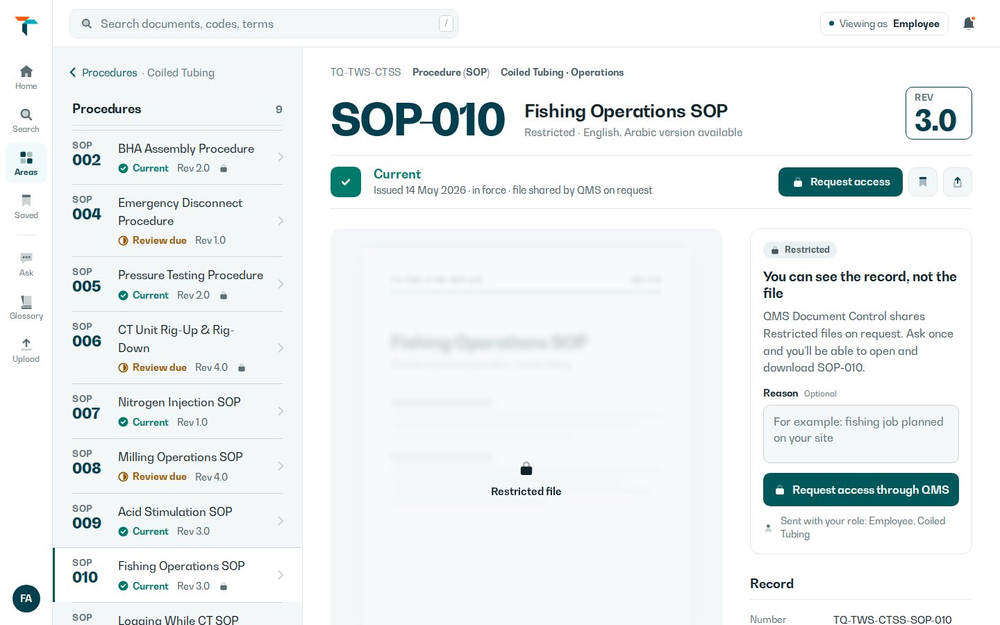
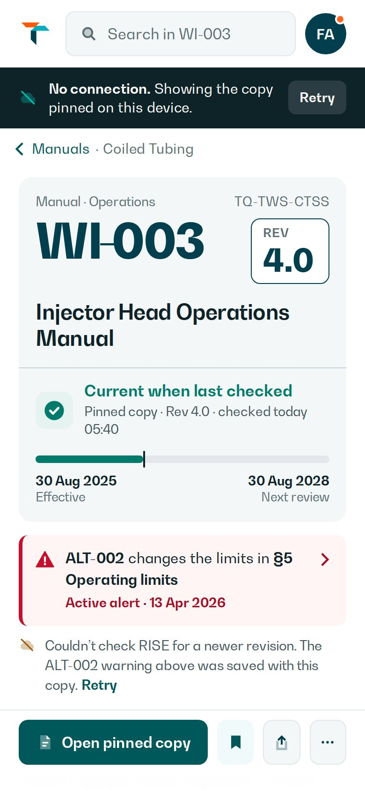
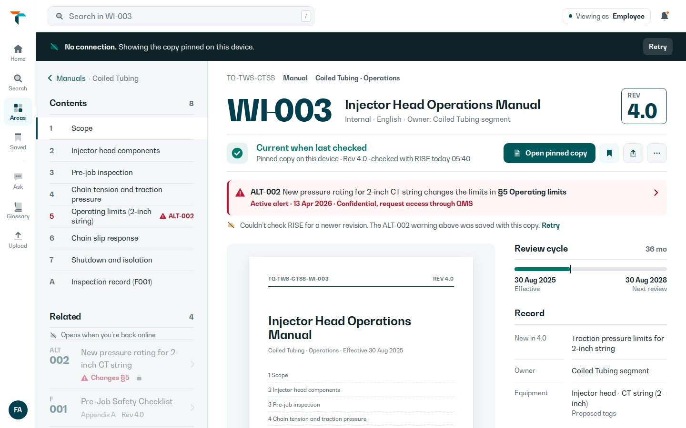

See it move · phone, 23 seconds
- Home. Sections rise in, top to bottom, once. Pressing the ALT-002 safety card shrinks it slightly.
- Search “pressure test”. Grey placeholder rows first, then the 17 results ripple in without the page jumping.
- Press a result. The row tints while your finger is down.
- WI-003, tap Save. The bookmark pops and a confirmation slides up: “Removed from Saved”, then “Saved. WI-003 is in your Saved list.”
- Offline, then Saved (empty). The two other states, as they appear on the phone.
- Phones set to reduce motion get no movement at all; every page is also complete without JavaScript.
Desktop Home · even columns → uneven tile grid
The safety alert gets the largest tile, with its two actions on the tile itself. “Continue reading” sits beside it in TAQA teal. The phone keeps N’s single column.


Loading · Search “pressure test”
Grey rows shaped exactly like the results, plus one plain line: “Searching 520 documents in force”. The layout does not jump when results arrive, and nothing spins.


Empty · Saved, before anything is saved
An empty list that teaches: what Saved is for, how to save (open a document, tap Save), two ways forward, and the documents you opened recently, each with a Save button.


Restricted · SOP-010 Fishing Operations SOP
The record stays open to every employee (number, revision, Current, issue date). Only the file is locked: a blurred cover, one clear request to QMS, and a reason field with its label above it.


Offline · WI-003 pinned on the device
A dark bar says what happened. Trust changes from “Current” to “Current when last checked” with the time, the ALT-002 safety warning stays, and what needs a connection is greyed with a short reason.


What I took from the skill
| Designed states | Loading, empty, restricted and offline screens for every key place, instead of showing only the “everything loaded” moment. |
|---|---|
| Press feedback | Buttons and cards shrink slightly (to 97–98%) while pressed, rows tint, and tab icons dip. You feel the tap even with gloves. |
| One short reveal | Lists appear top to bottom, 40 ms apart, once. Only transform and opacity are animated, so it stays smooth on older phones. |
| Uneven tile grid on desktop Home | The safety alert gets the biggest tile, “Continue reading” sits beside it in TAQA teal, and figures, changes, Saved and Tools fill the rest. |
| Quality checks | No pure black, no glows, shadows tinted teal, a label above every input, no emoji, and real data only. |
What I left out, and why
Its fonts (Geist, Satoshi). TAQA’s brand requires BW Gradual and Somar, and the brand wins. BW Gradual is already not Inter, so the skill’s real concern is met.
The flashy effects. Endless animations, magnetic buttons, particle bursts, scrambling text, frosted glass, tilting cards and moving gradients would distract from a safety-critical document.
Its default dials. The skill defaults to layout variance 8, motion 6 and density 4. For RISE I used 4, 3 and 6: ordered, calm and informative.
React, Tailwind and Framer. Those only apply when the real app is built. These are static design mockups.
Same real content as round 5. “Checked today 05:40” and the empty Saved list are example states. N and N + TAQA are untouched; nothing is implemented in the live RISE application, and no winner is chosen.